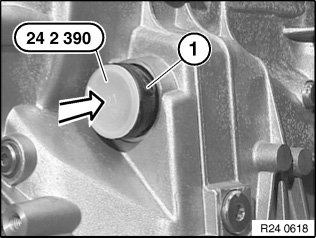
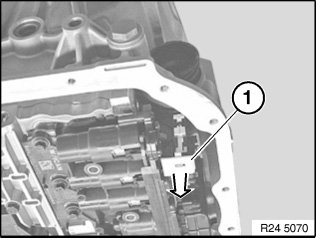
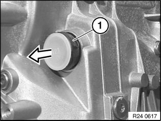
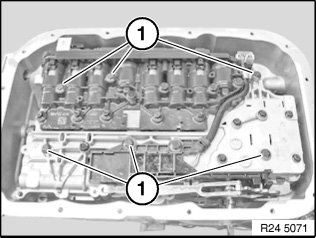
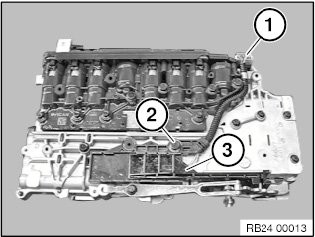
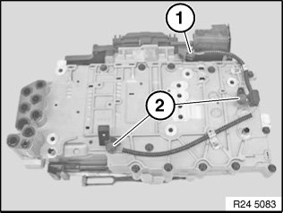
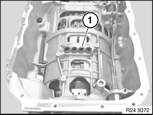
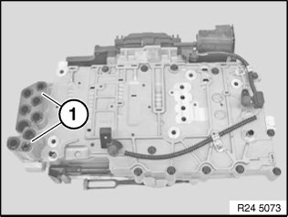
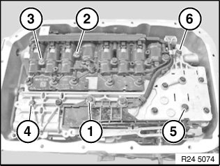

24 34 563 Replacing Mechatronics (GA6L45R)
24 34 563 Replacing mechatronics (GA6L45R)Special tools required:
Note:
After completing the repair work:
- Load specific data status with ISTA.
Important!
After completion of the repair work, check gearbox oil level.
Use only approved transmission oil.
Failure to comply with this requirement will result in serious damage to the automatic transmission!
Important!
Read and comply with notes on protection against damage from electrostatic discharge (ESD protection).
Necessary preliminary work:
^ Remove heat shields.
^ Support the automatic transmission with hydraulic lifting equipment.
^ Remove transmission cross member.

Grip clamping bush (1).
Loosen nut (2).
Detach the clamp (3) towards bottom using a screwdriver.
Pull cable (4) out of holder.
Installation note:
Adjust gearshift lever.

Important!
Mechatronics can be destroyed by static discharges. Therefore the contacts inside the connector must not be touched. Insert special tool immediately after operation.
Unscrew connector (1) and disconnect.

Insert special tool 24 2 390 in sealing cup (1).
Remove transmission oil sump.

Unlock sealing sleeve with slide (1).

Note position of sealing cup.
Pull out sealing cup (1).
Installation note:
Screw in sealing sleeve partially (lug in upper area). Turn until lug engages in groove of transmission. Slide in sealing cup.
Lug on sealing cup must not be damaged!

Release all bolts (1) using special tool 24 4 350.
Remove mechatronics.

Prior to installation of the new mechatronics:
The transmission position switches and the input and output speed sensor must be converted to the new mechatronics.
Unlock and disconnect the connector (1).
Release screw (2).
Remove and convert the transmission position switch (3).
Tightening torque 24 30 1AZ.

Unlock and disconnect the connector (1).
Unfasten screws (2).
Detach and convert the input and output speed sensor from mechatronics.
Tightening torque 24 30 4AZ.

Installation note:
Replace gasket (1).
Coat new gaskets with automatic transmission fluid and install.

Installation note:
Replace gaskets (1).
Coat new gaskets with automatic transmission fluid and install.

Important!
Tighten down bolts in sequence (1 to 6).
Failure to comply with this requirement will result in serious damage to the automatic transmission!
Tightening torque 24 30 1AZ.